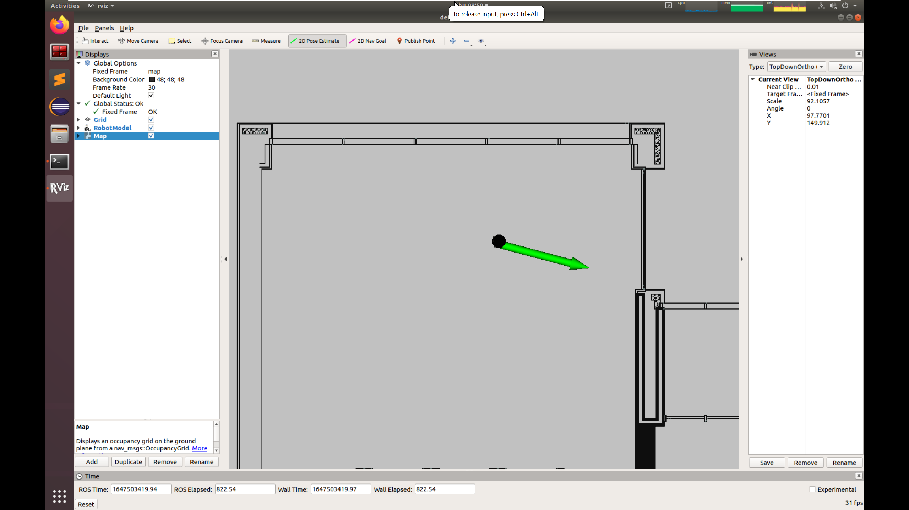
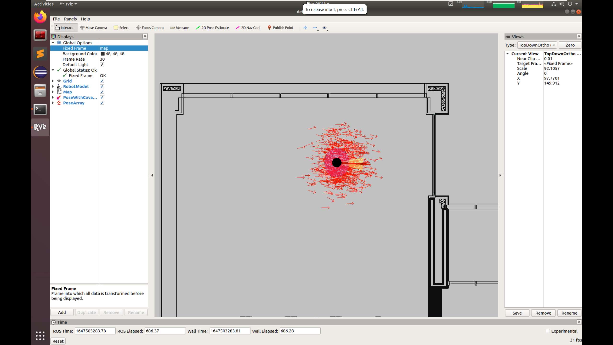
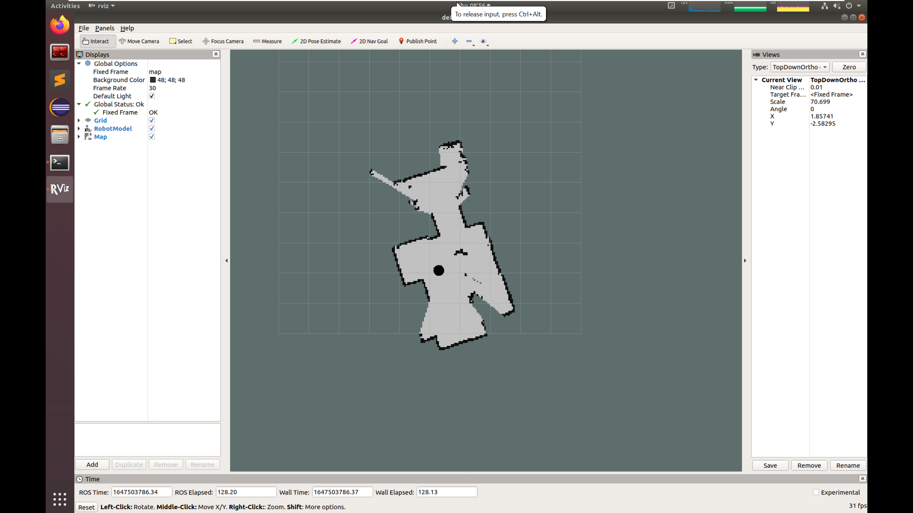

Lab 4: Localization using AMCL
In this lab, we will use amcl package for localization. The amcl algorithm implements Monte Carlo localization for state estimation. In the first part of the lab, you will use amcl with a map that has already been built for you. In the second part, you will build your own map using the gmapping package and then use the resulting map for localization.
Getting Started
Install the gmapping ros package in your VM.
sudo apt install ros-melodic-gmapping
Clone the example code into your catkin workspace:
cd ~/catkin_ws/src
git clone https://github.com/cmuq-robotics/cmuq-turtlebot-remote.git
Launching the example
Connect to one of the robots and edit the file connect_robot.sh with the correct values.
Open a new terminal window and set the environment variables:
source ~/connect_robot.sh
Use the tool rostopic to see the list of topics currently used in the network and check that you can connect to your robot.
rostopic list
Launch the teleop_key node to move your robot:
roslaunch turtlebot_teleop keyboard_teleop.launch
Part I: Using AMCL
Open a new terminal window and set the environment variables:
source ~/connect_robot.sh
Launch the amcl_demo
roslaunch amcl_demo amcl_demo.launch
This launch file will start the amcl node with certain predefined parameters. It also loads an existing map and publishes it in the /map topic. You can open the file ~/catkin_ws/src/cmuq-turtlebot-remote/amcl_demo/amcl_demo.launch to see the configuration.
The amcl node uses the particle positions to compute and publish the transform from map to base_link.
You can use RViz to visualize the progress of amcl as well as interact with the node.
In a new terminal, set the environment variables and run:
source ~/connect_robot.sh
rosrun rviz rviz
You should now have an RViz window.
You can add the robot model and the map and change the Fixed Frame to map in the Global Options.
When working with maps, it is useful to set the type of view to TopDownOrtho in the Views panel.
You should be able to see the map. However, the robot is not localized yet.

When amcl_demo loads the map of the environment, the TurtleBot does not know its current location on the map. It needs a little help. Locate TurtleBot’s position in the map by looking at the rviz visualization and let TurtleBot know this location by performing the following steps:
Click on the 2D Pose Estimate button on the tool toolbar at the top of the main screen.
Click the cursor on the location on the map where TurtleBot is located. A large green arrow will appear. Drag the mouse to extend the arrow in the direction TurtleBot is facing.
Make sure that the Fixed Frame is set to map in the Global Options. Otherwise, it won’t work.
{kind=link}
Now you should see the robot appearing in the location that you chose.
You can also visualize pose covariance and the particles that amcl computes. Click on the Add button on the Displays pane and add the topics /amcl_pose/PoseWithCovariance and /particlecloud.
{kind=link}
Move your robot around and observe the performance of AMCL.
Part II: Using GMapping
For the second part, you will need to kill all the nodes that you launched in part I. Now we will use gmapping to build our own map. Gmapping implements a laser-based SLAM algorithm. We will study SLAM in the next weeks. For now, let’s learn how to use it.
Open a new terminal window and set the environment variables:
source ~/connect_robot.sh
Launch the gmapping_demo
roslaunch gmapping_demo gmapping.launch
In a new terminal, set the environment variables and run:
source ~/connect_robot.sh
rosrun rviz rviz
You should now have an RViz window.
You can add the robot model and the map (topic /map) and change the Fixed Frame to map in the Global Options.
While moving your robot, you will observe how the map is being built.
{kind=link}
When you are done, you can save the map. In a new terminal, set the environment variables and run:
source ~/connect_robot.sh
rosrun map_server map_saver -f ~/catkin_ws/src/cmuq-turtlebot-remote/my_map
You now have a copy of the map in your catkin workspace.
Now it’s time to stop gmapping.
Finally, you should repeat part I but now using our map. Edit the launch file amcl_demo.launch in the amcl_demo package to make it work with the map you just saved.